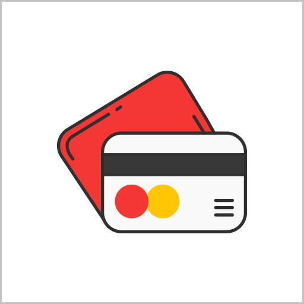

대표 번호
00-0000-0000
09:00 ~ 18:00 (주말/공휴일 휴무)

이메일
monott@monott.com

주소
서울특별시 강남구 테헤란로 212
(역삼동 718-5번지)
|
고객센터
감사합니다. 무엇을 도와드릴까요?
|
|---|
|
 결제 및 포인트 |
|---|
[결제 및 포인트] 테스트
저희 고객센터는 신속한 상담을 위해 ARS 사전 처리 단계를 없애고, |
[결제 및 포인트] 테스트
상품은 구매 후 7일 이내에 결제 취소 가능합니다. |
[결제 및 포인트] 테스트
프로그램은 메인상단 우측에 검색창을 이용하실 수 있으며 각 항목별로 조회해 보실 수 있습니다. |
[결제 및 포인트] 테스트
아래와 같은 방법으로 새 비밀번호 재설정을 하실 수 있습니다. |
[결제 및 포인트] 테스트
아래와 같은 방법으로 구매내역과 이용내역을 확인하실 수 있습니다. |
[결제 및 포인트] 테스트
아래와 같은 방법으로 구매내역과 이용내역을 확인하실 수 있습니다. |
[결제 및 포인트] 테스트
아래와 같은 방법으로 구매내역과 이용내역을 확인하실 수 있습니다. |
[결제 및 포인트] 테스트
아래와 같은 방법으로 구매내역과 이용내역을 확인하실 수 있습니다. |
[결제 및 포인트] 테스트
아래와 같은 방법으로 구매내역과 이용내역을 확인하실 수 있습니다. |
[결제 및 포인트] 테스트
아래와 같은 방법으로 구매내역과 이용내역을 확인하실 수 있습니다. |
| 1:1 상담 및 문의 | ||
|---|---|---|
|
대표 번호 00-0000-0000 09:00 ~ 18:00 (주말/공휴일 휴무) |
이메일 monott@monott.com |
주소 서울특별시 강남구 테헤란로 212 (역삼동 718-5번지) |